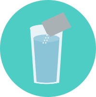

BEGIN

Mix two packets of drink mix powder with 64 oz.(1/2 gallon) of water
Take 2(5mg) Basacodyl tablets with a glass of water
Take 2(5mg) Basacodyl tablets with a glass of water.
Drink plenty of water and liquids throughout the day to avoid dehydration.
Pizza
Meat
Pasta
NO SOLIDS FOODS , CLEAR LIQUIDS ONLY upon rising , until after you procedure. A clear liquid diet is necessary for colonoscopy